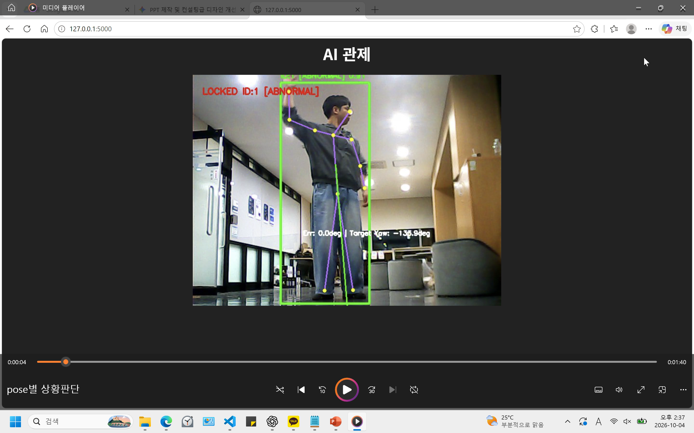
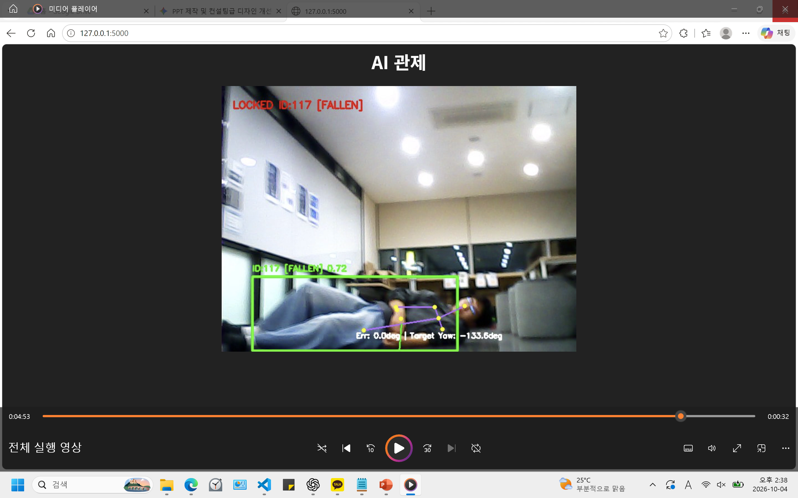
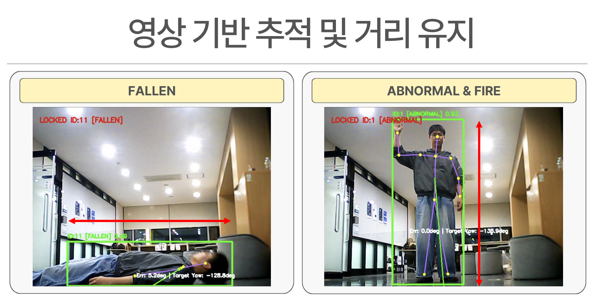

← 전체 프로젝트

실제 시연 화면에서 추론 영상 부분만 표시했습니다.
화면 점유율에 따라 전진, 정지, 후진 명령을 결정합니다.
04 - ROBOT SYSTEM INTEGRATION
Tracking Patrol Robot
대상 추적 시연Pose 기반 상황 판단 및 대상 재식별, 추적 기능을 연동한 순찰 로봇
MY ROLEPose 기반 상황 판단, 대상 재식별 및 추적 제어, 모바일 연동 구현
확인 결과Pose 기반 상황 판단 및 대상 추적 기능 시연
01 / SITUATION3가지 상황 판단
정상NORMAL

위험ABNORMAL

낙상FALLEN
02 / DISTANCE CONTROL자세에 따른 거리 유지

가로 자세낙상 상태는 박스의 가로와 세로 점유율 중 큰 값을 사용하여 정지와 후진을 적용
세로 자세서 있는 대상은 박스 높이의 화면 점유율을 기준으로 판단
PROJECT OVERVIEW
목표와 구현
Raspberry Pi 5에서 팀원이 만든 사람 및 Pose 인식 결과를 이용해 상황을 판단하고 추적 대상을 선택해 주행 명령으로 연결한 4인 팀 프로젝트입니다. 모바일 앱의 수동 제어와 PID 게인 설정, Flask 영상 확인 기능도 구성했습니다.
내가 구현한 일
- 팔, 어깨, 다리 Pose 각도를 이용해 위험 및 낙상 의심 상황을 판단하고 추적 대상 선택
- Bounding Box의 위치와 크기를 이용해 목표 방향과 화면 내 거리 유지 동작 생성
- 대상 유실 후 재등장 시 색상 히스토그램을 비교해 기존 대상 재식별 로직 적용
- Flutter 앱에서 수동 제어와 PID 게인 설정 및 저장, Flask에서 카메라 영상 확인 기능 구성
- STM32 펌웨어와 PID 구현 일부를 지원하며 라즈베리파이 추적 명령과 주행부 연동
SYSTEM FLOW
시스템 구조
- 01Camera / Pose
- 02상황 판단과 재식별
- 03RPi 주행 명령
- 04STM32 / 모터
협업 범위
비전 모델 학습과 STM32 센서, 모터, PID의 주 구현은 팀원이 담당했습니다. 저는 모델 출력 이후의 상황 판단, 대상 재식별, 추적 제어와 모바일 기능을 구현했습니다.
구현 코드 확인PROBLEM SOLVING
문제 해결과 결과
문제와 접근
상황 판단한 사람이 화면에서 사라졌다가 다시 나타나면 다른 대상으로 인식하는 문제가 있었습니다. 판단 당시 대상의 색상 히스토그램을 저장하고 재등장 객체와 비교하는 로직을 넣었습니다.
확인 결과와 한계
Pose 판단, 대상 추적과 주행 명령 전달을 시연했습니다.
재식별은 조명과 복장 변화에 민감했습니다. 화재 감지는 시험하지 못해 범위에서 제외했고, 장시간 무인 순찰은 검증하지 않았습니다.